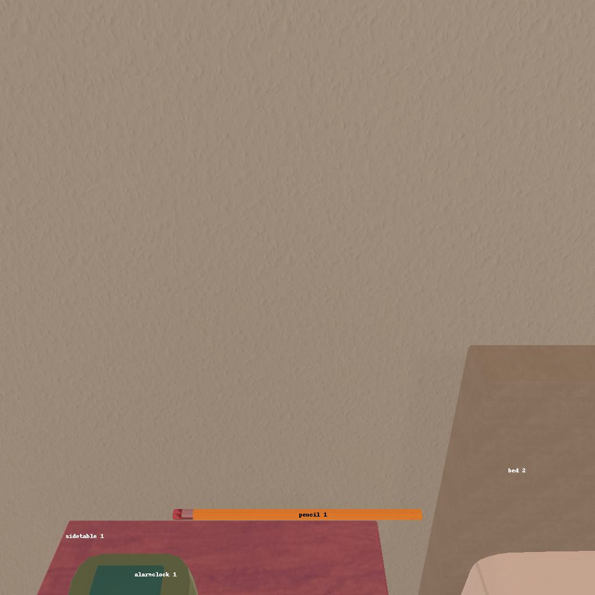

---------------------------------------------------------task: 2---------------------------------------------------------
--------------------------------------------------------------------------------------------------------------------------------------------------------------------
--------------------------------------------------------------------------------------------------------------------------------------------------------------------
Step:--------------------------------------------------------------------------9-------------------------------------------------------------------------------
----------------------------------------
VLM Prompt:
Image1:
Image2:
Image3:
**Instruction**
1. Analyze the provided image to identify all visible household objects, focusing on those relevant to the task description "examine the pen with the desklamp."
2. Use the analysis of the image and the task hint "The agent must find an object of the desired type, locate and turn on a light source with the desired object in-hand." to answer the question: what is the most reasonable action in the choices for the task description "examine the pen with the desklamp"?
4. Decide and write the answer using the template: The answer is: (i): , where i is the real number. If there is no desired object in the image, search every place based on **Initial Observation** to find the object. And if no one is exactly correct, choose a similar answer.
**Initial Observation**
You are in the middle of a room. Looking quickly around you, you can see bed (1-2), dresser (1), drawer (1-11), sidetable (1-2), desk (1), garbagecan (1), safe (1)
**Answer Choices**
(1): go to bed 1
(2): go to dresser 1
(3): go to bed 2
(4): go to drawer 1
(5): go to drawer 2
(6): go to drawer 3
(7): go to drawer 4
(8): go to desk 1
(9): go to garbagecan 1
(10): go to drawer 5
(11): go to drawer 6
(12): go to drawer 7
(13): go to drawer 8
(14): go to drawer 9
(15): go to drawer 10
(16): go to drawer 11
(17): go to safe 1
(18): take pillow 1 from sidetable 2
(19): take keychain 1 from sidetable 2
(20): take pencil 2 from sidetable 2
(21): take creditcard 1 from sidetable 2
(22): use desklamp 1
(23): examine sidetable 2
**Answer**
Let's think step by step by following the instructions.
----------------------------------------
----------------------------------------
Original Response:
The task description is to "examine the pen with the desklamp." From the provided images, in Image2 and Image3, we can see a pencil (labeled as pencil 1 and pencil 2) on sidetable 2, which is likely the object referred to as "pen" in the task description. Additionally, we can see a desklamp (labeled as desklamp 1) on the same sidetable.
The task hint suggests that the agent must find the object (the pen/pencil) and then locate and turn on a light source (the desklamp) with the desired object in hand. Therefore, the most reasonable action to take would be to first take the pencil (which is likely the "pen" in the task description) and then use the desklamp to examine it.
From the answer choices, the actions that would align with the task are taking pencil 1 or pencil 2 from sidetable 2 and then using desklamp 1. Since the action of taking the pencil and using the desklamp are separate actions and only one action can be selected, the priority should be to first get the pencil.
Therefore, the answer is: (20): take pencil 2 from sidetable 2.
----------------------------------------
----------------------------------------
>>> Refine Original VLM Response and Get Pure Action: No action
----------------------------------------
-----------------------------------------------------------------
Running time: 13.771751403808594 seconds
Total Money: 1.02618
-----------------------------------------------------------------
-----------------------------------------------------------------
Text Observation:Nothing happens.
-----------------------------------------------------------------
UNSUCCEED